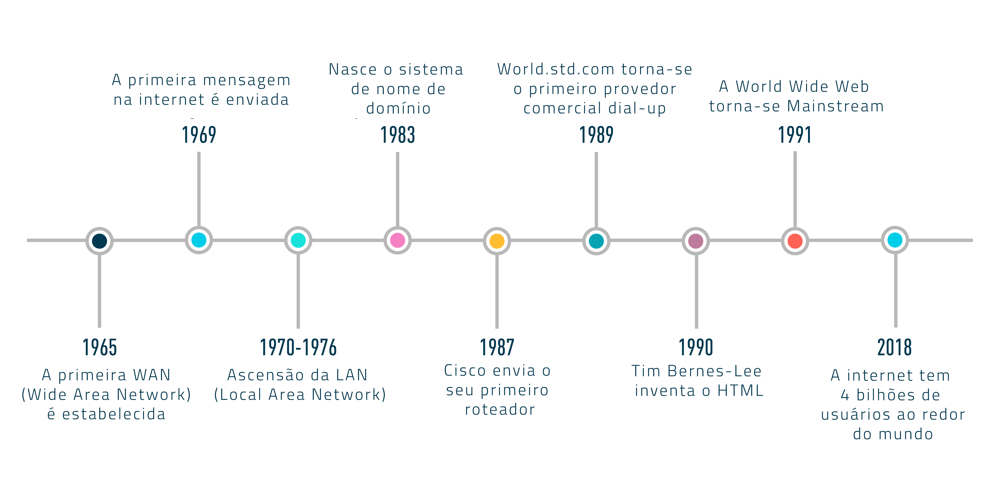

Bem vindos ao porjeto NET-EVO! um site feito com o intúito de contar a história da pricipal ferramenta de pesquisa e intreterimento contemporânea, a internet. Acompanharemos tudo desde seu surgimento a mais de 50 anos, até os dias atuaís, como a internet mudou o mundo, seus prós e contras, sua importância na atualidade, hábitos cotidianos que foram mudados pelo internet etc.
